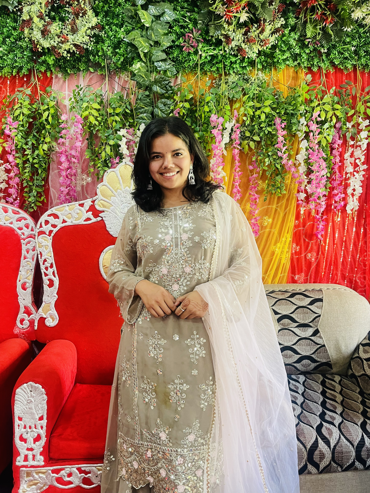

Geomatics Engineering Student | Geospatial Technology Enthusiast

I’m Aakriti Sharma, a fourth-year Geomatics Engineering student at Kathmandu University, Dhulikhel. I am passionate about using geospatial technologies to solve real-world problems. While I am still learning, I have worked on academic projects and practical coursework that helped me explore different areas of geomatics such as GIS, remote sensing, satellite geodesy, and programming for geospatial applications. I enjoy applying technical skills to build useful, user-friendly solutions.
Kathmandu University, Dhulikhel
Relevant Coursework: Remote Sensing, WebGIS, Spatial Data Infrastructure, GIS, Photogrammetry, Python, Java, Precise Point Positioning, Database Management System
Used GIS-based AHP technique to identify landslide-prone areas by analyzing terrain and environmental factors.
Mapped and analyzed pollution levels in urban areas and identified potential causes using spatial datasets.
Developed LULC maps using satellite images and ArcGIS tools to study landscape changes.
Created a simple tool to calculate six orbital parameters using Java, based on satellite geodesy concepts.